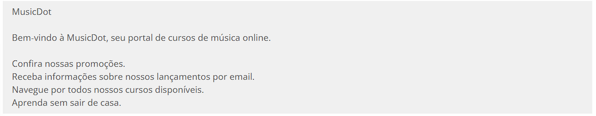
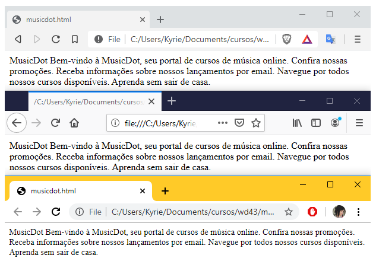
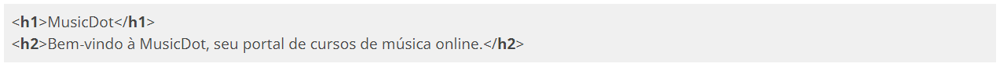

INTRODUÇÃO AO HTML
Exibindo informações na Web
A única linguagem que um navegador Web consegue interpretar para a exibição de conteúdo é o HTML. Para iniciar a exploração do HTML, vamos imaginar o seguinte caso: o navegador realizou uma requisição e recebeu como corpo da resposta o seguinte conteúdo:

Salve o arquivo como index.html e abra-o a partir do navegador à sua escolha.

Parece que obtemos um resultado um pouco diferente do esperado, não? Apesar de ser capaz de exibir texto puro em sua área principal, algumas regras devem ser seguidas caso desejemos que esse texto seja exibido com alguma formatação, para facilitar a leitura pelo usuário final.
Uma nota de atenção é que a imagem acima foi tirada dos navegadores: Microsoft Edge e Microsoft Internet Explorer 11. Veja o que acontece quando obtemos a mesma imagem porém com navegadores mais atuais:

A imagem acima foi tirada nos navegadores: Brave, Mozilla Firefox e Google Chrome.
Usando os resultados acima podemos concluir que os navegadores mais antigos e até mesmo o Microsoft Edge por padrão:
Podem não exibir caracteres acentuados corretamente;
Mas até mesmo nos navegadores mais novos:
Não exibem quebras de linha.
Para que possamos exibir as informações desejadas com a formatação, é necessário que cada trecho de texto tenha uma marcação indicando qual é o significado dele.
O texto com as devidas marcações, comumente chamado de "código". Reproduza então o código anterior em um novo arquivo de texto puro e salve-o como index-2.html

Agora, uma página muito mais agradável e legível é exibida. Para isso, tivemos que adicionar as marcações que são pertencentes ao HTML. Essas marcações são chamadas de tags, e elas basicamente dão uma representação ao texto contido entre sua abertura e fechamento.
O HTML (Hypertext Markup Language) ou linguagem de marcação de hipertexto foi desenvolvido para suprir a necessidade exibição de documentos científicos fornecidos por uma rede de Internet. Para termos uma comparação, é como se a Web fosse desenvolvida para exibir monografias redigidas e formatadas pela Metodologia do Trabalho Científico da ABNT.
Sintaxe do HTML
O HTML é um conjunto de tags responsáveis pela marcação do conteúdo de uma página no navegador. No código que vimos antes, as tags são os elementos a mais que escrevemos usando a sintaxe <nomedatag>.
No código de antes, vimos por exemplo o uso da tag <h1>. Ela representa o título principal da página.

Note a sintaxe. Uma tag é definida com caracteres < e >, e seu nome (h1 no caso). Nesse caso, para determinar onde o conteúdo acaba, usamos uma tag de fechamento com a barra antes do nome: </h1>
Algumas tags podem receber algum tipo de informação extra dentro de sua definição chamada de atributo. São parâmetros usando a sintaxe de atributo="valor". Para definir uma imagem, por exemplo, usamos a tag <img> e, para indicar o caminho que está essa imagem, usamos o atributo src:

Repare que a tag img não possui conteúdo por si só, e sim ela carrega ali o conteúdo de um arquivo externo (a imagem). Nesses casos, não é necessário usar uma tag de fechamento como antes no h1.
Tags HTML
O HTML é composto de diversas tags, cada uma com sua função e significado. Nesse momento, vamos focar em tags que representam títulos, parágrafo e ênfase.
Títulos
Quando queremos indicar que um texto é um título em nossa página, utilizamos as tags de heading em sua marcação:

As tags de heading são para exibir conteúdo de texto e contém 6 níveis, ou seja de <h1> à <h6>, seguindo uma ordem de importância, sendo <h1> o título principal, o mais importante, e <h6> o título de menor importância.
A ordem de importância tem impacto nas ferramentas que processam HTML. As ferramentas de indexação de conteúdo para buscas, como o Google, Bing ou Yahoo! levam em consideração essa ordem e relevância. Os navegadores especiais para acessibilidade também interpretam o conteúdo dessas tags de maneira a diferenciar seu conteúdo e facilitar a navegação do usuário pelo documento.
Parágrafos
Quando exibimos qualquer texto em nossa página, é recomendado que ele seja sempre conteúdo de alguma tag filha da tag <body>. A marcação mais indicada para textos comuns é a tag de parágrafo:
Se você tiver vários parágrafos de texto, use várias dessas tags <p> para separá-los:
Marcações de Ênfase
Quando queremos dar uma ênfase diferente a um trecho de texto, podemos utilizar as marcações de ênfase. Podemos deixar um texto "mais forte" com a tag <strong> ou deixar o texto com uma "ênfase acentuada" com a tag <em>. Do mesmo jeito que a tag <strong> deixa a tag "mais forte", temos também a tag <small>, que diminui o "peso" do texto.
Imagens
A tag <img> indica para o navegador que uma imagem deve ser "renderizada" (mostrada/desenhada) naquele lugar e necessita dois atributos preenchidos: src e alt.
O atributo alt não é obrigatório, porém é considerado um erro caso seja omitido, pois ele provê o entendimento da imagem para pessoas com deficiência que necessitam o uso de leitores de tela para acessar o computador, e também auxilia na indexação da imagem para motores de busca, como o Google etc.
O HTML 5 introduziu duas novas tags específicas para imagem: <figure> e <figcaption>. A tag <figure> define uma imagem em conjunto com a tag <img>. Além disso, permite adicionar uma legenda para a imagem por meio da tag <figcaption>.
Primeira Página
A primeira página que desenvolveremos para a MusicDot será a Sobre, que explica detalhes sobre a empresa, apresenta fotos e a história.
Boa prática - Indentação
Uma prática sempre recomendada, ligada à limpeza e utilizada para facilitar a leitura do código, é o uso correto de recuos, ou indentação, no HTML. Costumamos alinhar elementos "irmãos" na mesma margem e adicionar alguns espaços ou um tab para elementos "filhos".
A maioria dos exercícios dessa apostila utiliza um padrão recomendado de recuos.
Boa prática - Comentários
Quando iniciamos nosso projeto, utilizamos poucas tags HTML. Mais tarde adicionaremos uma quantidade razoável de elementos, o que pode gerar uma certa confusão. Para manter o código mais legível, é recomendada a adição de comentários antes da abertura e após do fechamento de tags estruturais (que conterão outras tags). Dessa maneira, nós podemos identificar claramente quando um elemento está dentro dessa estrutura ou depois dela.